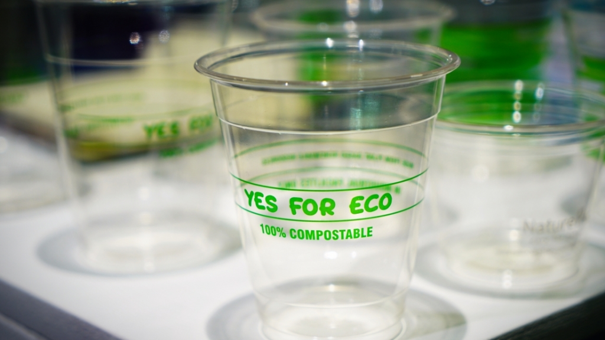
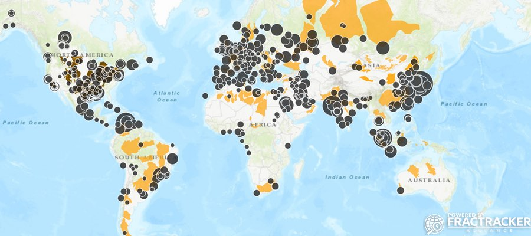

Definition

- All those plastics that are bio-based, therefore (partly) derived from biomass or biological materials. Bio-based plastics or bioplastics can be either biodegradable, compostable or not biodegradable. Biopqlastics, identified as bio-based and/or biodegradable plastics, are a relatively new concept, which has been largely growing over the last decades, together with its applications, research, and innovations in the field.
- Bioplastic Resin industry- Source Material
** Common sources of bioplastics are algae, corn, food/agri-waste, grasses, hemp, potatoes, soy, sugar, and wood. ** Many of the companies we analyzed use IngeoTM PLA resin (# 7 plastics). Global bioplastics production capacity is set to increase from around 2.11 million metric tons in 2018 to about 2.62 million metric tons in 2023. ** About 335 million metric tons of petroleum-based plastic produced annually. ** Bioplastics currently 1% of market *** Projected to grow 20-30% per year *** 2017 Market Valuation $4Billion *** Projected 2023 Value: $14.92Billion
Supply Chain Overview

- Global Supply Chain: very scarce information found on supply chain’s geography stage by stage. Bioplastics is still a relatively young and small industry and we couldn’t find any example of a supplier engagement model currently used by a particular brand to interact with its suppliers, perhaps even due to the more vertically integrated and “in house” and geographically localized nature of their supply chains.
- (Corn is one of the largest crops in the world, and can be grown in most places as it used in the process of Bio-Plastics.)
- In recent decades, corn production has soared. In the 70s, 266 million tons of corn were grown on 115 million hectares (per year), in 2007 800 million metric tons of maize were harvested in one year from 160 million hectares.
- Today, approximately 1 billion tons of corn are grown on 180 million hectares worldwide, to meet the increasing demand for bio-ethanol and bio-plastics.
Recent & Relevant News
- One bioplastic that is very popular at the moment and growing in popularity, especially in the single-use packaging applications related to the food-ware and drink-ware sector, is PLA, or polylactic acid.
- PLA is often derived from fermented corn or sugarcane starch. Given its popularity and the likelihood that everyone of us has to randomly come across PLA in our daily routine, we decided to use this type of resin, and other corn-derived bioplastics as the focus of our benchmarking analysis.
- Polylactic Acid (PLA) is a compostable bioplastic derived from plant sugars. It can be made from any sugar, such as corn starch, cassava, sugar cane, or sugar beet. NatureWorks is the world’s largest producer of PLA. Industrial corn is the primary source crop at the moment, but NatureWorks is working actively to diversify feedstocks, investigating other fibrous non-food crops, or even creating lactic acid from carbon dioxide or methane. NatureWorks refers to its PLA under the Ingeo brand. How does it do it?
- NatureWorks sequesters carbon through agricultural plants. The plants fix carbon as plant sugars through photosynthesis. These sugars form the basis of the plastic. - Raises questions about agricultural growing practices, food and biopolymers, and land use. - NatureWorks tries to use most abundant, local, and sustainable sources. Uses a critical assessment process to assure sustainability.
- Later on, corn-derived bioplastics will take an even more central role in our study, becoming a main focus for our whole research.
- There is one particular scope in which bioplastics seem to be capturing the market, and registered more than 60% of their total applications: packaging.
- Both rigid and flexible packaging bioplastics are in fact largely implemented, and we personally believe that this will be the market segment that will drive their future growth and allow them to win an even larger share of that market that now still belongs to conventional plastics.
- Other popular bioplastics market segments are those of food services, agriculture/horticulture, consumer electronics, automotive and consumer goods/household appliances.
Legal Issues & Major Controversies
Mapping the Supply Chain
Supplier Engagement Model
The BASF model for suppliers engagement and slightly modify it, ideating and constructing our ideal “model”. Please, observe the chart below to get familiar with our “IDEAL SUPPLIERS ENGAGEMENT MODEL” created for the plastics and bioplastics industry, which has been shaped and inspired by the practices currently used by the BASF company:
Governance
Benchmarks
| Brand | World Centric | Tipa | Nature Works | Ecoware | EcoProducts | Full Cycle Bioplastics |
| Location | HQ - Petaluma, CA CD - San Leandro, CA | HQ - Israel | HQ - MN, NE | HQ-New Zealand, | HQ- Boulder, CO | HQ - Richmond, CA |
| Source Materials | IngeoTM biopolymer made from plant based sugars | TIpa patented bioplastic (further info are not disclosed) | IngeoTM biopolymer made from plant based sugars | IngeoTM biopolymer made from plant based sugars | IngeoTM biopolymer made from plant based sugars | Any organic waste (food, crop waste, etc.) and abundant bacterial environments |
| Associations/ Certificates | B-Corp FSC Green America - Gold Certificate | -EN 13432 -ASTM D6400 -ISO 17088 -TUV Institute | -Material Health Certificate -TUV Institute -USDA Certified Bio Product -TSCA listed | -ISO 14064-1 (CarboNZero) -FSC certified | -B corp -ASTM D6400/ BPI logo -Cedar Grove approved items -USDA Biopreferred | None - early stage development. |
| Social Responsibility | FSC, MBE, Donate 25% of profit | ASTM D6400 | Different social responsibility clearly stated on their website | -Sustainable Business Network -Public Place Recycling Scheme (NZ) | -advocacy and education -Sustainability Report | Unavailable |
Monitoring
American Society for Testing and Materials ASTM-6400
●European Standardization Committee (CEN) EN13432
●International Standards Organization (ISO) ISO 14855
●German Institute for Standardization (DIN) DIN V49000
●Biodegradable Product Institute (BPI)
●TUV Austria- EN 13432, OK COMPOST label (previously owned by Vincotte)
Verification
Organizations with Compostability Standards & Testing
● American Society for Testing and Materials ASTM-6400-99
● European Standardization Committee (CEN) EN13432
● International Standards Organization (ISO) ISO14855 (only for biodegradation)
● German Institute for Standardization (DIN) DIN V49000
● Biodegradable Product Institute (BPI)- BPI label released based on ASTM D6400 and/or ASTM D6868 compliance.
Reporting
Life Cycle Assessments
- To even further understand the advantages and disadvantages that bioplastics may have, we decided to analyze their life cycle assessment and the impact that each phase of their life has on the environment, including input, outputs, emissions, total energy consumption and how bioplastics affect the different selected categories of impact.
- While researching among the many different LCAs that have been conducted on bioplastics, we found many comparisons with conventional plastics, including the perfect one for our research. Thus, we ended up selecting a case study that Natureworks did in collaboration with Starbucks, to compare Ingeo™ PLA, PP and PET drinking cups in their life cycle performance.
In the “Comparative Life Cycle Assessment Ingeo™ biopolymer, PET, and PP Drinking Cups” Starbucks and Natureworks commissioned an independent team to conduct a full LCA, following its main 4 phases (Goal and Scope, Life Cycle Inventory, Life Cycle Impact Assessment, and Interpretation). However, for the purpose of this paper we will only briefly touch on some of these phases, focusing more intensively on the results and interpretations of the LCA.
It is relevant to note that the main goal of this study was to analyze and compare the environmental performance of conventional plastics (PET and PP) and bioplastics (IngeoTM) drinking cups, as hypothetical supplies for Starbucks. This LCA assessed the cradle-to-grave life cycle of plastics and bioplastics, from raw material acquisition through End of Life, considering landfill as the only disposal options for all three materials.
Consequently, the life cycle phases of the examined plastic cups included:
● Cradle-to-polymer factory gate pellet production for PET,PP and/or Ingeo
● Pellet transportation to converter
● Conversion of pellet into cups and lids
● Transport of cups and lids to Starbucks shops
● Waste disposal in landfill
The use phase was not included due to the fact that it doesn’t generate any inputs or outputs and the transportation to landfill was also not included, assumedly because it would have been equal for all materials choices.
The functional unit27 that was selected for this LCA was a 16-ounce single-use plastic drinking cup.
The analysis coverage was done on the plastics that were manufactured in the US between 2000-2009 and the majority of the data came from the GaBi database, Starbucks direct suppliers, and/or other public data sources, except for the data relative to the IngeoTM resin which were provided by NatureWorks.
For what concerns the Life cycle Inventory phase the only two things that are worthy of being highlighted here are the fact that the transportation from the pellets producers to the cups manufacturer was considerably lower for the Ingeo resin, both in comparison to the PET cups ( 650 miles vs 1000 miles) and to the PP ones (865 miles vs 1000 miles) and the fact that all three materials are assumed to have inert behavior when landfilled and therefore shouldn’t lead to any landfill gas or other emissions, besides those related to the regular operation of the landfill.28 For any further information, the full study should be consulted.
During phase 3, or life cycle impact assessment, the following impact categories were taken into consideration:
a.) Energy demand from non-renewable sources:
Energy Demand from non renewable resources (fossil energy) is dominated by the production of the various polymers and the manufacturing of cups and lids. PET has the largest primary energy demand from non renewable resources.
b.) Global Warming Potential:
IngeoTM has significantly lower impacts on global warming potential than PET and PP. On the other hand, PET, has the highest carbon footprint of all scenarios. The materials are the largest source of emissions for the PP and PET scenario, while the manufacturing stage generates the most emissions for the Ingeo scenarios.
c.) Acidification Potential:
This is one of the trade-offs for bioplastics. IngeoTM indeed, is the material performing the highest in Acidification Potential. Roughly half of the material contribution is coming from the corn farming process, while the other half comes from electricity production. PP is the one that performs the best in this category.
d.) Eutrophication Potential:
Again, another of the trade offs bioplastics have to face. The relative high numbers for Eutrophication Potential registered by IngeoTM are driven by the agricultural portion of the Ingeo production chain. Eutrophication potential would be reduced even further when using PP rather than PET.
e.) Summer Smog:
PET cups have the highest smog potential. Both Ingeo cups and PP cups would provide a reduction from PET cups. The manufacturing impacts are similar for all scenarios. Materials play a larger role in impacting the smog creation for PET than for PP or Ingeo cups.
f.) Water Consumption:
Final trade off in the impact categories for bioplastics is water consumption. Obviously, Ingeo cups registered much higher water requirements than PET and PP due to the farming process that is involved in the supply chain.
When we look at the relevance of the different cups’ life-cycle phases and their contribution to the environmental impacts, we can conclude the following:
1. The manufacturing phase and the material extraction dominates in all impact categories, causing most of the emissions.
2. Ingeo and PP show lower numbers for all scenarios for primary energy demand (PED) from non renewable resources, GWP and POCP than their counterpart PET.
3. Transportation is not a large contributor to any impact category, mainly because of selected transportation mode (rail).
4. Transportation of the polymer material by rail to the plastic producer and transportation to the distribution points only has an influence on those impact categories which are influenced by the atmospheric pollutant NOx such as EP and AP, or by CO, such as POCP (Photochemical Ozone Creation Potential). The transportation by truck to the final shop can be considered not significant.
5. EOL phase is considered to have a minimal, almost negligible, contribution to environmental impacts according to this LCA.
Other Challenges & Impacts
So, after we analyzed the current market of bioplastics, it’s time to take a look at what is ahead of us and to talk about the future of bioplastics.
Some of the current trade-offs that bioplastics need to face and overcome are the following: land use, pesticides and fertilizers use, water consumption, possible higher methane release when landfilled, and higher contributions to acidification and eutrophication.
Luckily, new materials and innovations that are currently been experimenting and being put on the market seem to have the potential to set aside most of those trade-offs.
First of all, let’s talk about bioplastics derived from seaweed and algae. Algae and seaweed are characterized by high product yields and the ability to grow in a range of environments, including wastewater. They don’t need fertilizers, pesticides, herbicides and don’t compete for agricultural land. These bioplastics also have potential of being truly biodegradable in a very short time.
Second innovation, in which we highly believe and that we want to discuss are bioplastics derived from food waste and the agro-industrial sector. This is another great innovation with a high potential to repurpose waste, reduce emissions and diminish the manufacturing impact from raw materials.
Third, Natureworks is currently working on a new incredible raw material for Ingeo. Their R&D team is indeed assessing a new technology to skip plants as raw material and use microorganisms to directly convert greenhouse gases (more specifically methane) into lactic acid.39
Finally, there are also other types of bioplastics that are currently being developed and that even without achieving the status of “break-through” innovations, are still relevant. Many researchers and new companies are in fact working on developing bioplastics that are truly biodegradable in home compost, marine environment and non-industrial facilities.
All these innovations would help set aside most of the trade-offs that we are currently worrying about, helping reduce even further emissions and repurpose something that currently is either undervalued, consider waste, or harmful emissions.
Other areas where the bioplastics of the future should be focusing on and where these innovative raw materials may turn out to be a huge opportunity for improvement are the following:
- Reducing energy use during the manufacturing phase (material extraction/farming process + pellets production + molding), which is currently the most energy-demanding phase and also where the majority of the emissions are generated.
- Increase the overall use of renewable energies through each step of the process and lifecycle of bioplastics, and not only during pellets production or molding phases.
- Solve the issue of scarce recyclability and high likelihood to contaminate the current recycling stream that bioplastics are currently facing. Truly biodegradable materials obtained from algae, seaweeds and food waste may in this case help since they could very likely be home composted, without requiring industrial composting and therefore, no longer be a threat for contamination.
- Break our dependence on non-renewable resources
- Eliminate threat of greenwashing, learning to be more transparent about practices, raw materials, supply chains, suppliers and so on, without compromising intellectual property.
- Make circular economy and closing the loop a reality that we can all achieve simply separating and composting/biodegrade bioplastics at home.
To conclude, current challenges that need to be overcome, but that will require not only the bioplastic industry’s effort, but also the collaboration of government, citizens, customers, and so on, are the following :
- Scalability of the industry in general and of the most innovative raw materials
- Lack of composting infrastructure that needs to be fixed as soon as possible
Innovations
Conclusions
- Improve transparency while protecting intellectual property
- Need to make the business case for investing in bioplastics (e.g. mitigating legal risk from potential lawsuits against fossil fuel industry, increased public awareness, undiscovered potential behind certain raw materials, etc.)
- Work with municipalities to incorporate composting
- Missing a creation of “bio-plastic producer association”
Further Conclusion:
- Bioplastics are a small, new, but incredibly promising market. A market that is still surrounded by a lot of mystery, scarce understanding and low consensus on those pillars that should help standardize, give identity, and create purpose for such a prosperous reality. On top of this, a quick and ever changing scenario where innovations are a constant, makes it even harder for bioplastics to establish themselves as the new standard. Nevertheless, they seem to be quickly growing, especially in the field of packaging, food-ware and drink-ware and many companies that have been long involved in conventional plastics are turning their gaze towards this new reality, making us believe that is soon going to gain an even bigger share of the market, and that the big players want to be prepared and fully invested in this new realm.
- The bioplastics market is very complicated, rich of shades, varieties and possible definitions of what we can consider bioplastics, where they come from, what are their benefits, their challenges and so on. Nevertheless, we believe that in this short quarter we were able to get a pretty good understanding of this complex and multi-layered market, of its supply chain, main players and how all of the previous compare to their conventional plastics counterpart. We hope to have been able to convey everything we learnt during this quarter into this paper and to have helped people to get a better understanding of this fascinating, but incredibly complex reality, which we hope will soon become the new “standard” in all those applications where plastic is irreplaceable and a precious material in terms of physical and chemical properties.
- In order to do this, customers, universities, companies, organizations and governments need to come together and start demanding bigger investments and a bigger expansion in this market.
- Stimulating demand for bioplastics, we can launch an important signal and consequently put into motion a bigger mechanism that will entail new investments into research, materials and most importantly infrastructure able to both scale up the production of bioplastics and also process and capture (biodegrading or composting) bioplastics at their end of life.
The future of bioplastics is in our hands. We have the right to demand a greener future and we have a right to say “no more” to plastics derived from fossil fuel and the current plastic pollution crisis.